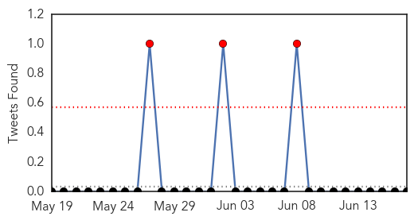
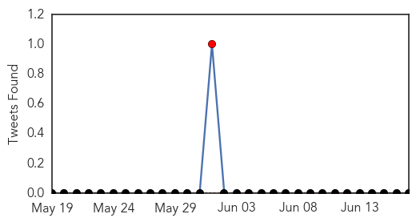

Cholera
30-Day Web Trend
2 alerts, 0 warnings
30-Day Twitter Trend
0 alerts, 0 warnings

Article Locations
Article Confidences
Top Articles:
- 0.952
- Ghana moves to curb cholera outbreak after floods
- 0.947
- Oral Cholera Vaccine is Effectice, Could be Deployed in Endemic Regions
- 0.946
- Ghana moves to curb cholera outbreak after floods
- 0.839
- Kenya: Anxiety in Naivasha as cholera cases hit 16
- 0.818
- Ghana Cholera: MDRGH010 DREF Review Report - Ghana
- 0.690
- Twelve years on, Iraq's nightmare continues
- 0.654
- Earthquake Recovery: 21 Healthcare Companies Making a Difference in Nepal
- 0.523
- Pall Helps Bring Clean Water to Remote Haitian Village
- 0.500
- UK humanitarian support
Top Tweets:
-
No tweets found for Jun 17, 2015
Mumps
30-Day Web Trend
0 alerts, 0 warnings
30-Day Twitter Trend
1 alerts, 0 warnings

Article Locations

Article Confidences

Top Articles:
-
No articles found for Jun 17, 2015
Top Tweets:
-
No tweets found for Jun 17, 2015